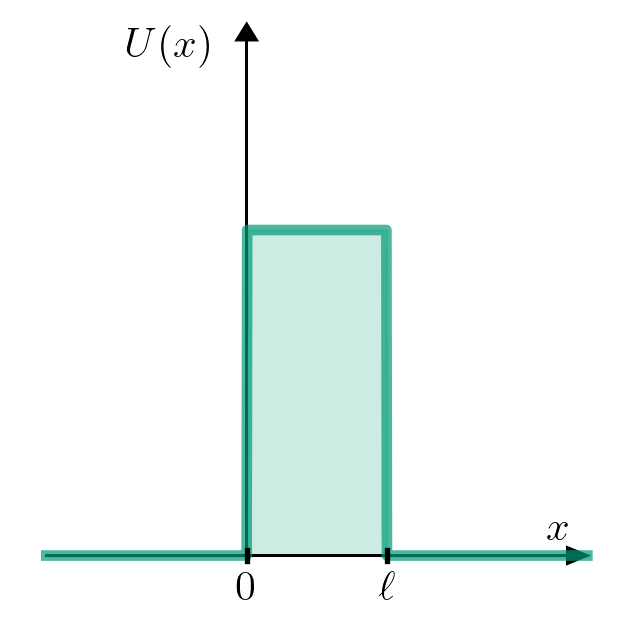
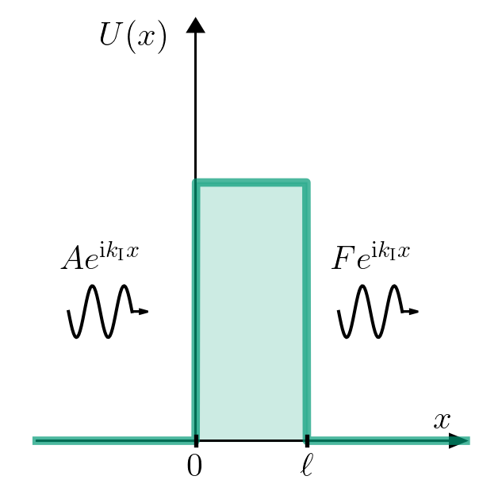
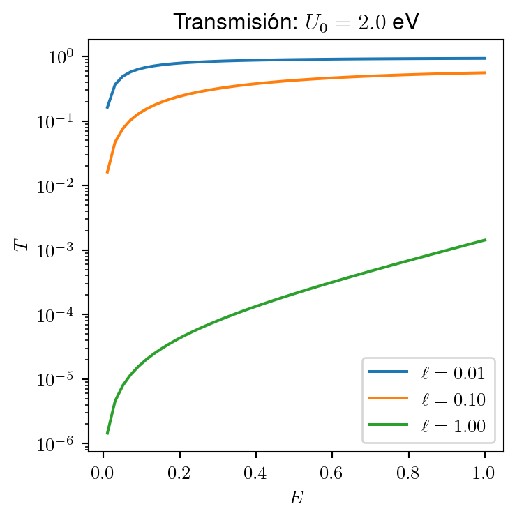

9 Partícula atravesando una barrera de energía potencial
\[ \definecolor{magenta}{RGB}{255,0,144} \newcommand{\cparentesis}[1]{ {\color{magenta} #1} } \newcommand{\iprn}{\cparentesis{(}} \newcommand{\fprn}{\cparentesis{)}} \newcommand{\ii}{{\rm i}} \]
Consideremos un partícula con energía potencial
\[ U(x) = \left\{ \begin{array}{ll} 0 & x<0 \\ U_0 & 0<x<\ell \\ 0 & \ell<x \end{array} \right. \]
9.1 Caso \(E<U_0\)
Solución
Las soluciones por regiones son:
| Región \({\rm I}\) | Región \({\rm II}\) | Región \({\rm III}\) |
|---|---|---|
| \(\psi_{\rm I} \iprn x \fprn = A e^{\ii k_{\rm I} x } + B e^{-\ii k_{\rm I} x }\) | \(\psi_{\rm II} \iprn x \fprn = C e^{k_{\rm II} x } + D e^{-k_{\rm II} x }\) | \(\psi_{\rm III} \iprn x \fprn = F e^{\ii k_{\rm I} x } + G e^{-\ii k_{\rm I} x }\) |
| \(\displaystyle k_{\rm I} = \sqrt{\frac{2mE}{\hbar^2}}\) | \(\displaystyle k_{\rm II} = \sqrt{\frac{2mE}{\hbar^2}}\) | \(\displaystyle k_{\rm III}=k_{\rm I}= \sqrt{\frac{2mE}{\hbar^2}}\) |
Restringimos nuestro interés al estado estacionario propagándose a la derecha de la región \({\rm III}\), entonces \(G=0\). Por lo que nuestras incógnitas son, \(A\), \(B\), \(C\), \(D\), \(F\) y \(E\).
Establecemos las condiciones de continuidad
| \[\psi_{\rm I}(x=0)=\psi_{\rm II}(x=0) \tag{9.1}\] | \[\psi_{\rm II}(x=\ell)=\psi_{\rm III}(x=\ell) \tag{9.2}\] |
| \[\displaystyle \frac{d}{dx}\psi_{\rm I}\bigg|_{x=0}=\frac{d}{dx}\psi_{\rm II}\bigg|_{x=0} \tag{9.3}\] | \[\displaystyle \frac{d}{dx}\psi_{\rm II}\bigg|_{x=\ell}=\frac{d}{dx}\psi_{\rm III}\bigg|_{x=\ell} \tag{9.4}\] |
De Ecuación 9.1, \[ \begin{align} \psi_{\rm I} \iprn x=0 \fprn = A e^{\ii k_{\rm I} 0 } + B e^{-\ii k_{\rm I} 0 } &= \psi_{\rm II} \iprn x=0 \fprn = C e^{k_{\rm II} 0 } + D e^{-k_{\rm II} 0 }\\ A+B&=C+D \end{align} \tag{9.5}\]
De Ecuación 9.3, \[ \begin{align} \ii k_{\rm I} A -\ii k_{\rm I} B &= -k_{\rm II} C+k_{\rm II} D\\ \ii k_{\rm I}(A-B) &= -k_{\rm II} (C-D) \end{align} \tag{9.6}\]
De Ecuación 9.2, \[ Ce^{-k_{\rm II}\ell}+De^{k_{\rm II}\ell} = F e^{\ii k_{\rm I}\ell} \tag{9.7}\]
De Ecuación 9.4, \[ -k_{\rm II}Ce^{-k_{\rm II}\ell} +k_{\rm II} D e^{k_{\rm II}\ell} = \ii k_{\rm I} F e^{\ii k_{\rm I}\ell} \tag{9.8}\]
Despejamos \(C\) de Ecuación 9.7, \[ C= e^{k_{\rm II}\ell}\bigg[F e^{\ii k_{\rm I}\ell}-De^{k_{\rm II}\ell}\bigg] = F e^{(\ii k_{\rm I}+k_{\rm II})\ell} -De^{2k_{\rm II}\ell} \tag{9.9}\] y sustituimos en Ecuación 9.8 \[ \begin{align} -k_{\rm II} \bigg[ F e^{(\ii k_{\rm I}+k_{\rm II})\ell} -De^{2k_{\rm II}\ell} \bigg] + k_{\rm II} De^{k_{\rm II}\ell}&=\ii k_{\rm I} F e^{\ii k_{\rm I}\ell}\\ D\bigg[ k_{\rm II} e^{2k_{\rm II}\ell} + k_{\rm II} e^{k_{\rm II}\ell} \bigg] &=\ii k_{\rm I} F e^{\ii k_{\rm I}\ell} +k_{\rm II} F e^{(\ii k_{\rm I}+k_{\rm II})\ell}\\ D&=\left[\frac{\ii k_{\rm I} e^{\ii k_{\rm I}\ell} +k_{\rm II} e^{(\ii k_{\rm I}+k_{\rm II})\ell}}{ k_{\rm II} e^{k_{\rm II}\ell} \big( e^{k_{\rm II}\ell}+1 \big) }\right] F\\ D&=\left[ \frac{ \frac{\ii k_{\rm I}}{k_{\rm II}} e^{\ii k_{\rm I}\ell-k_{\rm II}\ell} + e^{\ii k_{\rm I}\ell}}{ 1+e^{k_{\rm II}\ell} } \right] F\\ D&=\left[ \frac{ 1 + \frac{\ii k_{\rm I}}{k_{\rm II}} e^{-k_{\rm II}\ell} }{ 1+e^{k_{\rm II}\ell} } \right] e^{\ii k_{\rm I}\ell} F \end{align} \]
Sutituimos en Ecuación 9.9, \[ \begin{align} C &= F e^{(\ii k_{\rm I}+k_{\rm II})\ell} -De^{2k_{\rm II}\ell}\\ &= F e^{\ii k_{\rm I}\ell}e^{k_{\rm II}\ell} - \left[ \frac{ 1 + \frac{\ii k_{\rm I}}{k_{\rm II}} e^{-k_{\rm II}\ell} }{ 1+e^{k_{\rm II}\ell} } \right] e^{\ii k_{\rm I}\ell} e^{2k_{\rm II}\ell} F\\ &=Fe^{\ii k_{\rm I}\ell} \left[ \frac{ e^{k_{\rm II}\ell}(1+e^{k_{\rm II}\ell}) - e^{2k_{\rm II}\ell} - \frac{\ii k_{\rm I}}{k_{\rm II}} e^{k_{\rm II}\ell}}{1+e^{k_{\rm II}\ell}} \right]\\ &= Fe^{\ii k_{\rm I}\ell} \left[ \frac{ e^{k_{\rm II}\ell} - \frac{\ii k_{\rm I}}{k_{\rm II}} e^{k_{\rm II}\ell}}{1+e^{k_{\rm II}\ell}} \right]\\ &=Fe^{\ii k_{\rm I}\ell+k_{\rm II}\ell} \left[ \frac{ 1 - \frac{\ii k_{\rm I}}{k_{\rm II}} }{1+e^{k_{\rm II}\ell}} \right] \end{align} \]
De Ecuación 9.5, \[ B = C+D-A \] Sustituimos en Ecuación 9.6, \[ \begin{align} \ii k_{\rm I} ( A-C-D+A) &= -k_{\rm II}(C-D)\\ 2A &= -\frac{k_{\rm II}}{\ii k_{\rm I}}(C-D) +C+D \\ A&= \frac{1}{2} \bigg( 1+\frac{\ii k_{\rm II}}{k_{\rm I}} \bigg) C+\frac{1}{2} \bigg( 1-\frac{\ii k_{\rm II}}{k_{\rm I}} \bigg) D \end{align} \]
Sustituimos los valores \(C\) y \(D\), \[ \begin{align} A&= \frac{1}{2} \bigg( 1+\frac{\ii k_{\rm II}}{k_{\rm I}} \bigg) Fe^{\ii k_{\rm I}\ell+k_{\rm II}\ell} \left[ \frac{ 1 - \frac{\ii k_{\rm I}}{k_{\rm II}} }{1+e^{k_{\rm II}\ell}} \right] +\frac{1}{2} \bigg( 1-\frac{\ii k_{\rm II}}{k_{\rm I}} \bigg) \left[ \frac{ 1 + \frac{\ii k_{\rm I}}{k_{\rm II}} e^{-k_{\rm II}\ell} }{ 1+e^{k_{\rm II}\ell} } \right] e^{\ii k_{\rm I}\ell} F\\ &=\left\{ \frac{1}{2} \bigg( 1+\frac{\ii k_{\rm II}}{k_{\rm I}} \bigg) e^{k_{\rm II}\ell} \left[ \frac{ 1 - \frac{\ii k_{\rm I}}{k_{\rm II}} }{1+e^{k_{\rm II}\ell}} \right] +\frac{1}{2} \bigg( 1-\frac{\ii k_{\rm II}}{k_{\rm I}} \bigg) \left[ \frac{ 1 + \frac{\ii k_{\rm I}}{k_{\rm II}} e^{-k_{\rm II}\ell} }{ 1+e^{k_{\rm II}\ell} } \right] \right\} e^{\ii k_{\rm I}\ell} F\\ &=\left\{ \frac{1}{2} \bigg( 1+\frac{\ii k_{\rm II}}{k_{\rm I}} \bigg) \left[ \frac{ 1 - \frac{\ii k_{\rm I}}{k_{\rm II}} }{1+e^{-k_{\rm II}\ell}} \right] +\frac{1}{2} \bigg( 1-\frac{\ii k_{\rm II}}{k_{\rm I}} \bigg) \left[ \frac{ 1 + \frac{\ii k_{\rm I}}{k_{\rm II}} e^{-k_{\rm II}\ell} }{ 1+e^{k_{\rm II}\ell} } \right] \right\} e^{\ii k_{\rm I}\ell} F \end{align} \]
Una pregunta interesante es preguntarnos cuánto de la onda estacionaria atraviesa la barrera.

Definimos el coeficiente de transmisión,
\[ T = \frac{|F|^2}{|A|^2} = \frac{\displaystyle \frac{4E}{U_0} \bigg( 1-\frac{E}{U_0} \bigg) }{ \displaystyle \frac{4 E}{U_0}\bigg( 1-\frac{E}{U_0} \bigg)+ \sinh (k_{\rm II}\ell) } \]

\[ \psi_{\rm Barrera} \sim e^{-k_{\rm II}x} \Rightarrow T \sim |\psi_{\rm Barrera}|^2\sim e^{-2 k_{\rm II}\ell } \]